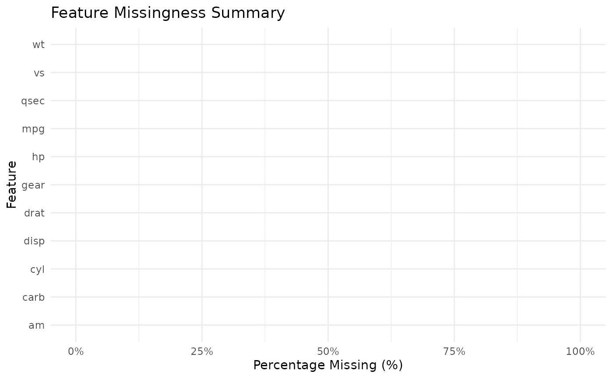
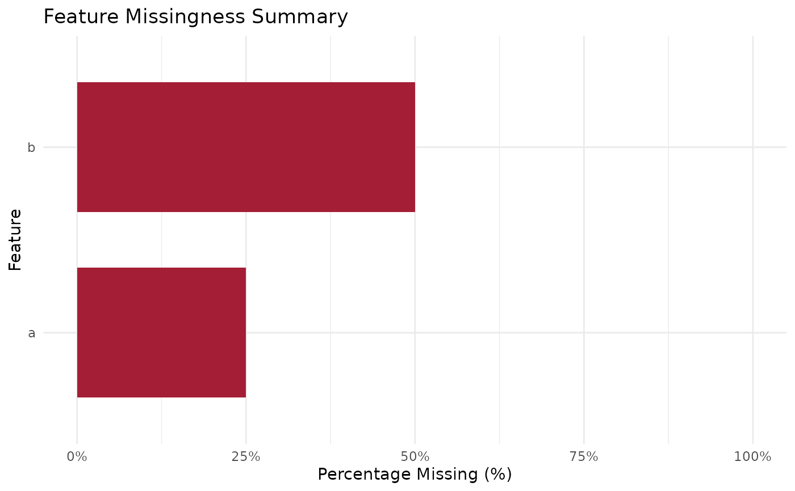

Plot method for features_percent_miss objects
Source:R/plot.features_percent_miss.R, R/plot_features_percent_miss.R
plot_features_percent_miss.RdCreates a bar chart visualizing feature missingness percentages for objects
produced by features_percent_miss.
Generates a horizontal bar chart visualizing the percentage of missing values per column.
Usage
# S3 method for class 'features_percent_miss'
plot(x, top_n = NULL, ...)
plot_features_percent_miss(data, top_n = NULL)Examples
res <- features_percent_miss(mtcars)
plot(res)

df <- data.frame(a = c(1, 2, NA, 4), b = c(NA, NA, 3, 4))
plot_features_percent_miss(df)
